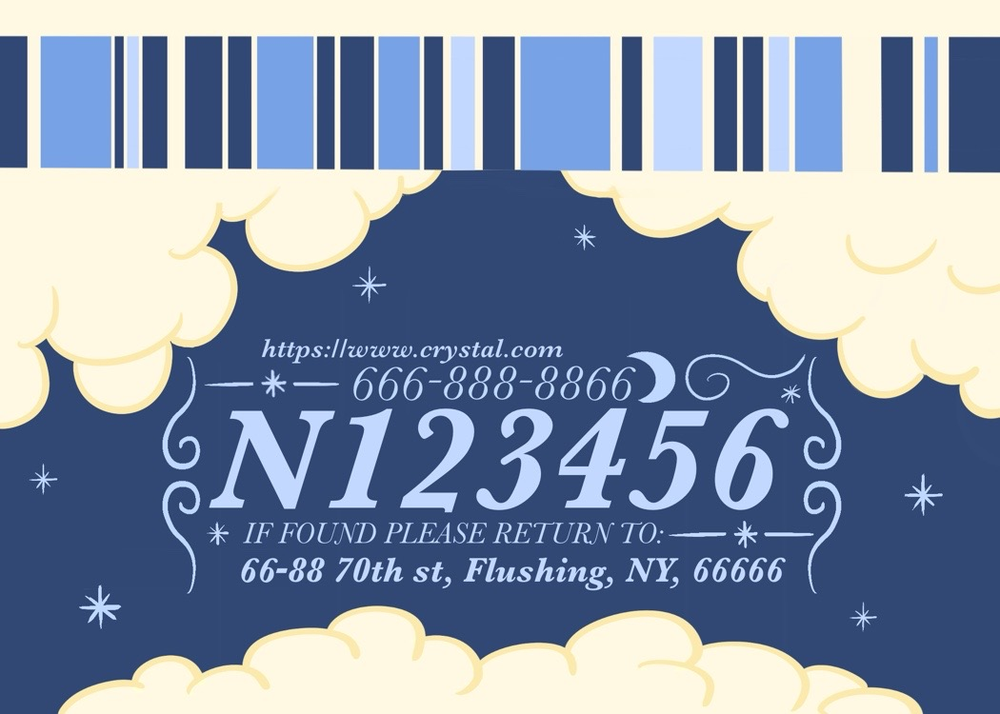

Monogram & ID Card Design
An elegant and dreamy monogram logo that extends into a personalized ID card, exploring how a visual identity can evolve across formats.
Branding / Identity

Overview
An elegant and dreamy monogram logo that extends into a personalized ID card, exploring how a visual identity can evolve across formats.
Concept
This project began as a monogram logo design and expanded into a personalized ID card system. The goal was to create an elegant and dreamy visual identity through refined typography, soft forms, and cohesive visual details. By extending the monogram into an ID card format, the project explores how branding elements can remain consistent while adapting across different applications.
Visual system / Process
The monogram was developed with attention to balance, proportion, and letterform harmony. After refining the logo, I extended the visual identity into a personalized ID card layout using Adobe InDesign, ensuring consistent typography, spacing, and hierarchy throughout the system.
Final identity
